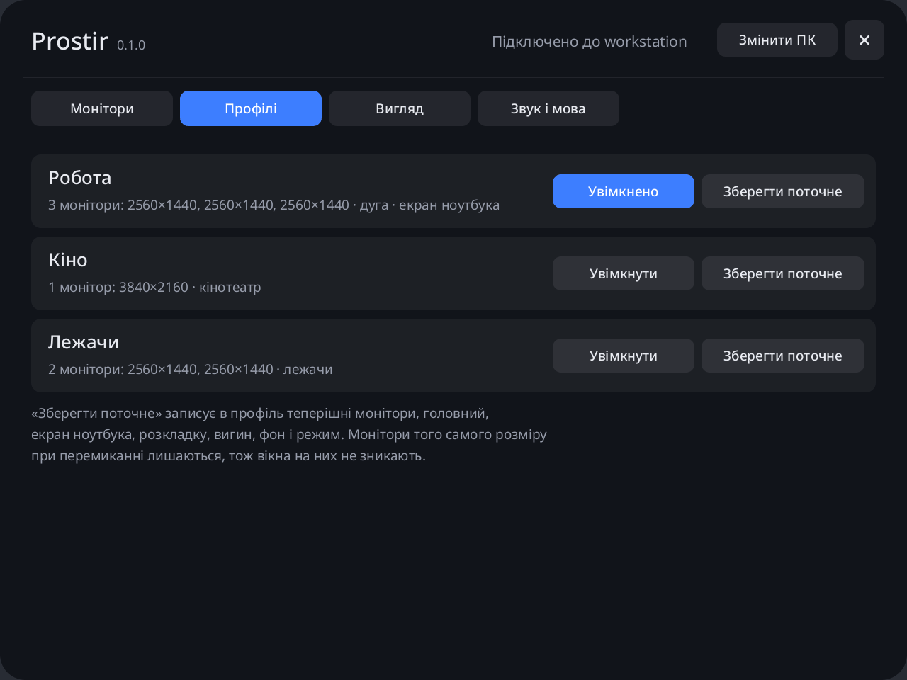
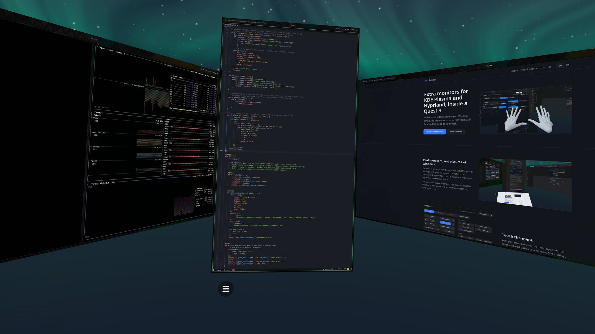

Додаткові монітори для KDE Plasma і Hyprland у шоломі Quest 3
Справжні виходи робочого столу навколо вас. Вікна, панелі й миша ходять по них так, ніби монітори стоять на столі.
Що вміє Prostir
Справжні монітори, а не картинки вікон
Кожен є виходом робочого столу: у KDE в «Параметри системи → Дисплей», у Hyprland у hyprctl monitors. Переносьте на нього вікна, розгортайте, ставте туди панель чи робочі столи.
Підніміть монітор над іншим у шоломі, і робочий стіл теж поставить його вище, тож миша піде туди, куди ви дивитеся.

Меню, якого можна торкатися
Коли руки в полі зору, меню відкривається на відстані витягнутої руки й працює як сенсорний екран. Додайте монітор 1080p, 1440p, 4K, широкий чи портретний; переставте, зробіть головним, вигніть ряд.

14мсвід закодованого кадру на ПК до екрана шолома, по Wi-Fi
Ця частина охоплює мережу, декодування й показ. Заміряно на ноутбуці автора (Intel Arc) із Quest 3. Це не вся затримка від вашого екрана до очей: захоплення й кодування екрана на ПК додають ще кілька мілісекунд.
ПК кодує відеокартою, Quest декодує апаратно просто в компоновник, тож текст лишається чітким.
Робота, кіно, лежачи
Профілі одним натиском перемикають монітори, екран ноутбука, розкладку й фон. Монітори того самого розміру лишаються, тож вікна на них не стрибають.

Кімната або панорама
Позаду моніторів: чорний фон, ваша кімната через камери шолома або одна з чотирьох вбудованих панорам: ніч, захід, космос і сяйво.

KDE Plasma або Hyprland
У Hyprland монітори є headless-виходами, які захоплюються просто в буфери відеокарти. Кожен має свій Waybar і робочі столи, а правила вікон діють на них, як на будь-який дисплей.
Розкладка переживає перечитування конфігу, а монітори акуратно зникають, коли Prostir завершується.

І екран ноутбука
Висить під головним монітором без шва і зникає, коли кришку закрито.
Режим фокусу
Усі монітори, крім того, де миша, темнішають.
Звук і мікрофон
Звук із ПК грає в шоломі, а програми на ПК чують мікрофон шолома, поки записують. Перемикач мікрофона в меню шолома це вимикає.
Зняли шолом
Через 10 секунд вікна, панель і звук повертаються на ноутбук.
Вікно на клавіатуру
Прямокутник на справжній клавіатурі показує стіл через камери.
Сполучення й шифрування
ПК нічого не транслює шолому, з яким не сполучений. Сполучення починається, лише коли ви підтвердите його в шоломі й введете 6-значний код.
Встановлення
У кожному релізі є обидві частини: програма для ПК і застосунок для шолома, файл APK.
На ПК
- Встановіть Prostir одним із цих способів. Лише одним: пакети ставлять у
/usr/bin, архів у~/.local/bin, і разом вийде дві копії.Arch Linux і похідні
З AUR:yay -S prostir-binDebian, Ubuntu
Завантажте файл.debз релізу, тоді:sudo apt install ./prostir_*.debFedora, openSUSE
Завантажте файл.rpmз релізу, тоді у Fedora:
або в openSUSE:sudo dnf install ./prostir-*.rpmsudo zypper install --allow-unsigned-rpm ./prostir-*.rpmБудь-який дистрибутив, без root
Завантажтеprostir-<версія>-x86_64-linux.tar.gz, розпакуйте й запустіть встановлення, яке ставить у~/.local:
Пакети вище самі тягнуть GStreamer і PipeWire; з архівом встановіть їх самі (див. Вимоги).tar xf prostir-*-x86_64-linux.tar.gz cd prostir-*/ ./install.sh --autostart
- Запустіть Prostir з меню застосунків. Вікна в нього немає: у треї з'явиться іконка. Щоб він запускався разом із сеансом, увімкніть у меню трею «Запускати разом із системою».
- У Hyprland без uwsm запускайте його з конфігу. У
hyprland.conf:
або вexec-once = prostirhyprland.lua:
Якщо ставили з архіву йhl.on("hyprland.start", function () hl.exec_cmd("prostir") end)~/.local/binнемає уPATH, пишіть~/.local/bin/prostirзамістьprostir. Якщо ввімкненоecosystem:enforce_permissions, дозвольте ще захоплення екрана, уhyprland.conf:
або вpermission = /usr/(local/)?bin/prostir|.*/\.local/bin/prostir, screencopy, allowhyprland.lua:hl.permission("/usr/(local/)?bin/prostir|.*/\\.local/bin/prostir", "screencopy", "allow")
На шоломі
- Зробіть акаунт Meta акаунтом розробника: створіть організацію або приєднайтеся до неї на developers.meta.com. Це безплатно, але Meta може попросити підтвердити акаунт. Без цього перемикача режиму розробника не буде.
- Увімкніть режим розробника в застосунку Meta Horizon на телефоні: Пристрої → Налаштування шолома → Режим розробника.
- Встановіть
adbна ПК: пакетandroid-toolsв Arch, Fedora й openSUSE,adbу Debian і Ubuntu. - Підключіть шолом до ПК кабелем USB і вдягніть його. Погодьтеся на «Allow USB debugging», краще з позначкою «Always allow from this computer». Тепер
adb devicesпоказує шолом якdevice, а неunauthorized. - Встановіть APK з того самого релізу:
adb install prostir-*.apk - У шоломі відкрийте бібліотеку (Library), у фільтрі виберіть «Невідомі джерела» (Unknown sources) і запустіть Prostir. Деякі версії Horizon OS показують його там за назвою пакета,
dev.prostir.client. - Шолом знайде ПК у тій самій мережі Wi-Fi або через кабель. Першого разу підтвердьте в шоломі сполучення з цим ПК, а тоді введіть 6-значний код, який покаже шолом, у віконці на ПК.
Через кабель ПК передає з'єднання за допомогою adb, тож для USB потрібні adb на ПК і режим розробника на шоломі. Для Wi-Fi, коли застосунок уже встановлено, не потрібне ні те, ні інше.
Оновлення
- AUR: разом зі звичайним оновленням системи, наприклад
yay -Syu. .debабо.rpm: встановіть новіший файл так само.- Архів: розпакуйте новий реліз і ще раз запустіть
./install.sh. - Шолом: встановіть новий APK поверх старого; налаштування й сполучення лишаються.
adb install -r prostir-*.apk
Оновлюйте обидві частини, коли можете. Трохи різні версії працюють разом, бо кожна сторона пропускає повідомлення, яких не знає. Якщо різниця завелика, шолом скаже, що саме оновити.
Видалення
- AUR:
sudo pacman -R prostir-bin. Debian, Ubuntu:sudo apt remove prostir. Fedora:sudo dnf remove prostir. openSUSE:sudo zypper remove prostir. - Архів: запустіть
./install.sh --uninstallу розпакованій папці. - Налаштування й сполучення лишаються в
~/.config/prostir. Щоб прибрати їх, видаліть цю папку, а якщо вмикали автозапуск, то й~/.config/autostart/prostir.desktop. - Шолом:
adb uninstall dev.prostir.clientабо видаліть застосунок у бібліотеці, у «Невідомих джерелах».
Вимоги й обмеження
ПК
- KDE Plasma 6 або Hyprland, на Wayland. Сеанси X11 не підтримуються.
- GNOME поки не підтримується. Хочете його? Проголосуйте 👍 на GitHub.
- PipeWire з
pw-cliіpw-loopback, GStreamer 1.22 або новіший із плагінами PipeWire і PulseAudio. - Для кодування відеокартою: графіка Intel або AMD з кодуванням H.264 чи HEVC через VA-API і плагін GStreamer
va:gst-plugin-vaв Arch, в інших дистрибутивах він у gst-plugins-bad. - Без цього, наприклад на NVIDIA, Prostir кодує процесором через x264, і тоді потрібен
x264encз gst-plugins-ugly. Див. Допомогу. - Для сполучення одна з програм
kdialog,zenity,fuzzel,wofiчиrofi, щоб показати віконце для коду. - У Hyprland панель із треєм для меню Prostir (Waybar з модулем
tray) і служба сповіщень, наприклад mako, dunst чи swaync. - Брандмауер, якщо він є, має пропускати TCP 47830 і UDP 47831. Див. Допомогу.
- Для USB:
adbна ПК.
Шолом
- Meta Quest 3, на ньому перевірено; Quest 3S має працювати так само. Quest 2 і Pro не перевірялися.
- Режим розробника, щоб встановити застосунок; у Horizon Store його ще немає.
- Один шолом на ПК водночас.
Версія 0.1, автор користується нею щодня на Plasma 6.8 і Hyprland 0.57 з графікою Intel Arc. Проблеми й ідеї пишіть в issues на GitHub.
Допомога
Шолом бачить ПК, але не підключається
Найчастіше заважає брандмауер. ПК приймає з'єднання на порту TCP 47830 і оголошує себе на порту UDP 47831; дозвольте обидва. З ufw:
sudo ufw allow 47830/tcp
sudo ufw allow 47831/udpЗ firewalld:
sudo firewall-cmd --add-port=47830/tcp --add-port=47831/udp --permanent
sudo firewall-cmd --reloadШолом не знаходить ПК
Обидва мають бути в одній мережі, і мережа не повинна ізолювати пристрої один від одного, як часто роблять гостьові мережі. Введіть IP-адресу ПК на клавіатурі в меню шолома або підключіться кабелем (потрібен adb).
Якщо на ПК є брандмауер, перевірте й порти вище.
NVIDIA, або шолом каже, що бракує кодера
Prostir кодує відеокартою через VA-API. Коли це недоступно, він сам переходить на процесор і кодує через x264. Так буває на NVIDIA, без плагіна GStreamer va і з Mesa, яку постачають Fedora й openSUSE: у ній немає кодування H.264 і HEVC.
Для кодування процесором потрібен x264enc: gst-plugins-ugly в Arch, gstreamer1.0-plugins-ugly у Debian і Ubuntu, gstreamer1-plugins-ugly з RPM Fusion у Fedora, gstreamer-plugins-ugly з Packman в openSUSE. Якщо не працює жоден спосіб, шолом покаже, чого бракує. prostir --software завжди кодує процесором.
Після запуску в Hyprland нічого не видно
У Prostir немає вікна; його меню в треї, а власного трею Hyprland не має. Додайте панель із треєм, наприклад Waybar з модулем tray. Для сповіщень запустіть службу сповіщень, наприклад mako, dunst чи swaync.
На ПК не відкривається віконце сполучення
Встановіть одну з програм kdialog, zenity, fuzzel, wofi чи rofi. Або натисніть у шоломі кнопку під кодом, щоб поміняти сторони: тоді ПК покаже код у меню трею, а ви введете його в шоломі.
Чи надсилає Prostir щось про мене?
Нічого, за чим можна впізнати вас чи ваш ПК. Офіційні збірки раз на день анонімно рахують кожен ПК, і це можна вимкнути в треї («Рахувати цей ПК серед користувачів») або змінною PROSTIR_NO_COUNT=1. Подробиці в політиці конфіденційності.
Журнали для звіту про помилку
ПК: запустіть prostir у терміналі; RUST_LOG=debug prostir додає подробиць. Шолом: adb logcat -s prostir. Тоді відкрийте issue на GitHub.